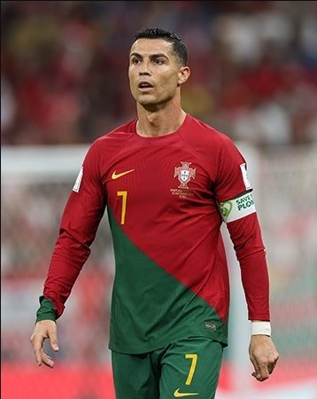

'Noodle-Slicing' Move + Bizarre Antics Compilation
The abstract title-celebration gesture: At the 2026 Saudi Pro League title celebration, Ronaldo ran through a string of baffling gestures on the podium, dubbed by Chinese fans the 'noodle-slicing move' — hands flailing up and down like a chef shaving noodles, expression exaggerated, like performance art.
The Bilibili parody carnival: The gesture was cut into countless parody videos by content creators, set to BGM like 'Noodle-Slicing' or 'Noodle-Brother', routinely racking up hundreds of thousands of views. Fans joked that 'Ronaldo can open a noodle shop in Shanxi after he retires' — parody culture once again pushed his 'abstract' moments onto the front page.
The Saudi-pitch obscene gesture: Earlier, in February 2024, Ronaldo was banned one match by the Saudi FA for making a gesture deemed 'obscene / provocative' toward fans. He claimed it was 'a misunderstanding'; the authorities did not buy it and the punishment stood, dealing another image blow.
Answering the 'Messi' provocation: In an away Saudi King's Cup match, home fans chanted 'Messi! Messi!' in unison to provoke Ronaldo, who responded with repeated 'shush' gestures, the scene was once tense. This hair-trigger temperament has become the 'engagement magnet' for opposition fans.
Smirks and shrugs: Beyond gestures, Ronaldo's lip-curls, shrugs and eye-rolls during his Saudi stint have been captured frame by frame and turned into stickers and memes. A single post-match interview can be read in 800 different 'scheming' ways; he has become a living specimen of 'abstract culture'.
The Siu celebration goes sour: Even the once-signature 'Siu' celebration has been played out. In some matches Ronaldo deliberately cut back on the Siu and switched to other weird moves, only for the new move to be parodied in turn — trapping him in a 'the more low-key he tries to be, the more attention he gets' vicious circle, stuck either way.
The essence of bizarre behaviour: From the noodle-slice to the shush gestures, these 'bizarre behaviours' refract a veteran in decline trying to maintain presence through attention-seeking. When a legend can only stay relevant through his actions, his football value is largely spent.